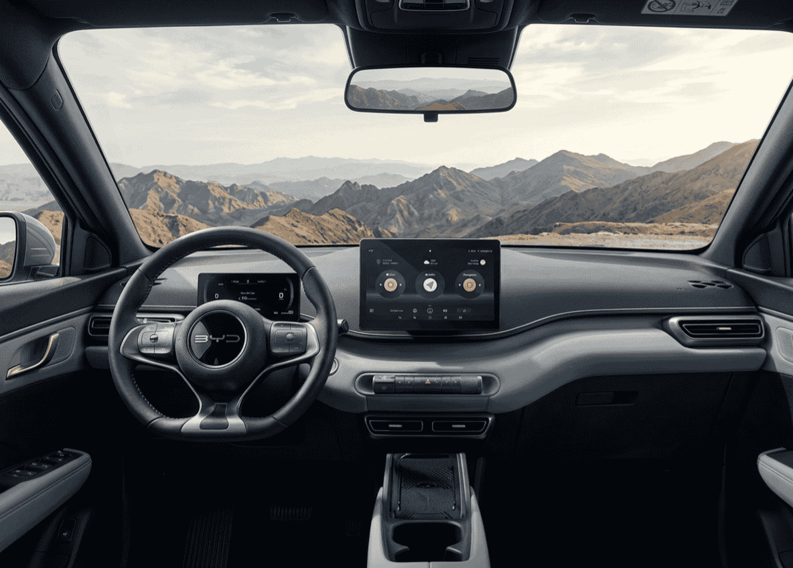

Por qué el Seagull se llama Dolphin Surf aquí
Si llevas tiempo siguiendo el mercado del coche eléctrico, el nombre BYD Seagull te sonará. Es el urbano eléctrico que lleva años generando titulares por toda Europa con su precio de venta en China — menos de 9.000 euros en su versión de acceso. Un número que hacía difícil imaginar que pudiéramos verlo en nuestros concesionarios sin que los aranceles lo dejaran irreconocible.
Pues bien, el Seagull ya está en España. Pero no se llama Seagull. BYD decidió comercializarlo en Europa con el nombre Dolphin Surf, integrándolo en la familia Ocean de la marca junto al Dolphin y al Seal. No es simplemente un cambio de nombre: el modelo europeo incorpora paragolpes rediseñados para cumplir la normativa europea de choques peatonales, mejoras en los sistemas de seguridad activa y adaptaciones de equipamiento al mercado europeo.
Así que cuando busques "BYD Seagull precio España" — y mucha gente lo hace — la respuesta es esta: se llama Dolphin Surf, ya puedes comprarlo, y el precio es bastante más razonable de lo que muchos esperaban.
El precio real: del 12.955€ a lo que pagas de verdad
Aquí hay que hilar fino porque los números del BYD Dolphin Surf tienen más capas que una cebolla, y entenderlos bien puede ahorrarte bastantes disgustos.
El precio que más circula es el de 12.955€. Ese número es real, pero viene con asterisco. Está calculado así para la versión Active en color amarillo (Citrus Yellow), financiando un mínimo de 12.500€ durante entre 72 y 116 meses, con permanencia mínima de 36 meses, aplicando el Plan Auto+, la campaña del fabricante, el descuento del concesionario y el incentivo CAE de 950€ (que no todos los compradores pueden aprovechar).
⚠️ El precio de 12.955€ requiere financiación obligatoria
Si quieres comprar el Dolphin Surf al contado, el precio mínimo real es 18.780€ (con descuentos de fabricante y concesionario, pero sin financiación). El precio de catálogo oficial es 19.990€. La cifra de 12.955€ solo aplica financiando con CA Auto Bank en condiciones específicas.
Dicho esto, los números siguen siendo muy competitivos. A continuación, los precios reales de las tres versiones:
| Versión | PVP oficial | Con campaña + Plan Auto+ | Con financiación |
|---|---|---|---|
| Active (30 kWh · 88 CV) | 19.990 € | ~18.780 € | desde 12.955 € |
| Boost (43,2 kWh · 88 CV) | 23.990 € | ~22.780 € | desde 15.780 € |
| Comfort (43,2 kWh · 156 CV) | 26.490 € | ~25.280 € | desde 18.280 € |
Precios con financiación incluyen adelanto Plan Auto+, campaña fabricante, descuento concesionario e incentivo CAE. Sujetos a aprobación de financiación y disponibilidad de fondos del Plan Auto+.
Lo que me parece relevante destacar es que incluso comprando al contado y sin ninguna ayuda, 19.990€ por la versión Active es un precio que en este segmento no tiene rival directo. El Dacia Spring, que era el más barato del mercado, sale desde 17.890€ antes de ayudas — y el Dolphin Surf le gana en prácticamente todo.
Versiones y especificaciones completas
⚡ Especificaciones técnicas de la gama Dolphin Surf:
- • Longitud: 3,99 m | Anchura: 1,72 m | Altura: 1,59 m
- • Distancia entre ejes: 2,50 m
- • Maletero: 308 litros (ampliables a 1.037 L)
- • Carga AC máxima: 11 kW (todas las versiones)
- • Carga DC máxima: 65 kW (Active) / 85 kW (Boost y Comfort)
- • Del 10% al 80% en DC: ~30 minutos
- • Velocidad máxima: 150 km/h
- • Carga bidireccional V2L: Sí, en todas las versiones
- • Garantía batería: 8 años / 250.000 km
- • Garantía vehículo: 6 años / 150.000 km
Hay un dato que me parece especialmente importante: la carga bidireccional V2L de serie en todas las versiones. Eso significa que puedes usar el coche como fuente de energía para cargar otros dispositivos — desde un portátil hasta electrodomésticos. En un utilitario urbano de este precio, esa función es inédita.
Autonomía: qué esperar en el día a día
Aquí viene la pregunta que más me hacen: ¿cuánto llega de verdad? Los datos WLTP son claros — 220 km para la versión Active con 30 kWh, y 322 km para las versiones Boost y Comfort con 43,2 kWh. Pero hay que entender qué significa eso en la práctica.
Lo primero que hay que aclarar es que el Dolphin Surf es un coche diseñado para ciudad. Con ese perfil de uso, los 220 km WLTP de la versión Active se convierten en 356 km en ciclo urbano — porque en ciudad el motor eléctrico es mucho más eficiente, recuperas energía en cada frenada y las velocidades son bajas. Para alguien que hace 30-40 km diarios en ciudad, esta versión es más que suficiente.
🔋 Autonomía real según uso:
- • Active (30 kWh): 220 km combinado WLTP · 356 km ciudad WLTP · ~180-200 km mixto real
- • Boost / Comfort (43,2 kWh): 322 km combinado WLTP · 507 km ciudad WLTP · ~270-300 km mixto real
En autopista a ritmo sostenido, la autonomía real bajará notablemente. El Dolphin Surf no está pensado para viajes interurbanos frecuentes — para eso tienes el BYD Dolphin con 427 km WLTP.
Para la gran mayoría de compradores que buscan este tipo de coche — un urbano para ir al trabajo, hacer recados, llevar a los niños al colegio — la versión Boost con 43,2 kWh me parece la opción más equilibrada. La versión Active tiene autonomía suficiente para uso urbano puro, pero si algún día necesitas salir de la ciudad te puede dejar algo justo.
Diseño: más grande por dentro de lo que parece
Con 3,99 metros de largo, el Dolphin Surf es un coche compacto. Pero lo que BYD ha conseguido con la plataforma e-Platform 3.0 —diseñada específicamente para eléctricos— es aprovechar ese espacio de forma muy inteligente. La distancia entre ejes de 2,50 metros es generosa para sus dimensiones exteriores, lo que se traduce en un habitáculo donde cuatro adultos viajan cómodos.
El diseño exterior es reconocible y tiene personalidad. Líneas rectas y marcadas, faros LED con firma angular, spoiler integrado sobre el portón trasero y un patrón de matriz de puntos en el pilar C que separa visualmente el techo de la carrocería — un detalle de diseño bastante llamativo para un coche de este precio. Algunos dicen que la parte delantera recuerda vagamente a un Lamborghini Urus en miniatura. No sé si llego a tanto, pero sí tiene una presencia más deportiva de lo que cabría esperar.
🎨 Colores disponibles:
Lime Green (de serie), Apricity White, Ice Blue y Polar Night Black (estos tres, 650€ adicionales). El amarillo Citrus Yellow es el color de la oferta de 12.955€ — si prefieres otro color, el precio sube ligeramente.
Interior y tecnología de serie

El interior del Dolphin Surf sorprende con la pantalla giratoria de 10,1" y un nivel de equipamiento que sus rivales no ofrecen a este precio
El interior es donde el Dolphin Surf da probablemente su mayor sorpresa. Para un coche en este rango de precio, el equipamiento de serie es muy generoso. Todas las versiones incluyen:
- Pantalla táctil giratoria de 10,1" con rotación eléctrica — puedes orientarla en horizontal o vertical
- Cuadro de instrumentos digital de 7"
- Apple CarPlay y Android Auto inalámbricos
- Acceso sin llave NFC
- Control de crucero adaptativo
- Frenado automático de emergencia
- Asistente de mantenimiento de carril
- Cámara trasera y sensores de aparcamiento
- Aire acondicionado
- Control por voz "Hi BYD"
- 3 puntos de anclaje ISOFIX (2 traseros + 1 en copiloto)
Para ponerlo en perspectiva: el control de crucero adaptativo y el frenado de emergencia son elementos que en muchos coches de combustión de este precio son opcionales de pago. Aquí van de serie en la versión más barata.
La Blade Battery: por qué importa
BYD fabrica sus propias baterías, y eso no es un dato menor. La Blade Battery que equipa el Dolphin Surf usa química LFP (litio-ferrofosfato), la misma tecnología que analizamos en profundidad en nuestro artículo sobre baterías LFP vs NCM. Las ventajas clave para el comprador son tres:
Primero, puedes cargar al 100% habitualmente sin que la batería se deteriore. Las LFP no sufren el mismo estrés que las baterías NCM cuando se cargan completas — esto es relevante para quien carga en casa cada noche. Segundo, más ciclos de carga: las LFP soportan más de 3.000 ciclos de carga con degradación mínima, frente a los ~1.500 de las NCM. En la práctica, significa que la batería durará más que el resto del coche. Y tercero, mayor seguridad térmica: son mucho más resistentes al thermal runaway (el encadenamiento de celdas que provoca incendios).
La garantía de BYD respalda todo esto: 8 años o 250.000 km en la batería, garantizando un mínimo del 70% de capacidad. Es de las mejores garantías de batería del mercado, y en un coche de este precio resulta especialmente tranquilizadora.
5 estrellas Euro NCAP y World Urban Car 2025
Hay dos datos de imagen que BYD ha usado bien con el Dolphin Surf y que merecen mención porque son objetivos. El primero: 5 estrellas en los ensayos Euro NCAP. En un segmento donde algunos rivales tienen 3 o 4 estrellas, eso es un argumento de peso — especialmente para quienes compran un urbano para llevar niños.
El segundo: fue nombrado World Urban Car 2025 en los World Car Awards, los premios más respetados del sector a nivel global. No es un galardón de una revista local — es la industria reconociendo que el Dolphin Surf ha redefinido lo que puede ofrecer un coche urbano eléctrico asequible.
Con quién compite en España
| Modelo | Precio desde | Autonomía WLTP | Euro NCAP | CarPlay/Android |
|---|---|---|---|---|
| BYD Dolphin Surf (Seagull) | 19.990 € (12.955 € fin.) | 220 / 322 km | ⭐⭐⭐⭐⭐ | ✅ Sí |
| Dacia Spring | 17.890 € | 220 km | ⭐⭐⭐ | ✅ Sí |
| Citroën ë-C3 | 23.300 € | 320 km | ⭐⭐⭐⭐⭐ | ✅ Sí |
| Peugeot e-208 | ~28.000 € | 400 km | ⭐⭐⭐⭐⭐ | ✅ Sí |
| Leapmotor T03 | ~18.900 € | 265 km | ⭐⭐⭐ | ✅ Sí |
La tabla habla bastante claro. El Dacia Spring es el único rival más barato de catálogo, pero el Dolphin Surf lo supera en seguridad (5 vs 3 estrellas), equipamiento y autonomía en la versión Boost. El Citroën ë-C3 es probablemente su rival más directo en relación calidad-precio dentro del segmento europeo, aunque arranca 3.000€ más caro.
Mi valoración: ¿a quién le conviene?
El BYD Dolphin Surf me parece uno de los movimientos más inteligentes que BYD ha hecho en España. No han intentado vender el Seagull chino sin más — lo han adaptado, lo han certificado con 5 estrellas Euro NCAP, lo han nombrado World Urban Car y lo han puesto en los concesionarios a un precio que no tiene rival directo.
Dicho esto, quiero ser honesto sobre sus limitaciones: no es un coche para todo el mundo. Con 220 km de autonomía en la versión Active y 322 km en la Boost, el Dolphin Surf es un urbano puro. Si vives en ciudad, haces menos de 60-70 km diarios y cargas en casa o en el trabajo, es probablemente el coche más inteligente que puedes comprar en 2026 en este presupuesto. Si necesitas hacer viajes de 300-400 km con frecuencia, mira el BYD Dolphin o el Citroën ë-C3.
✅ El Dolphin Surf conviene si:
- • Usas el coche principalmente en ciudad o para trayectos cortos
- • Puedes cargar en casa o en el trabajo
- • Buscas el eléctrico nuevo más barato del mercado con garantías reales
- • La seguridad (5 estrellas NCAP) es prioritaria para ti
- • Quieres tecnología de serie sin pagar extras
⚠️ El Dolphin Surf no conviene si:
- • Necesitas más de 200-250 km reales de autonomía habitual
- • Haces viajes interurbanos frecuentes
- • No puedes financiar y quieres comprar al contado al precio más bajo posible
- • Necesitas llevar 5 pasajeros con regularidad (está homologado para 4)
Publicado el 19 de marzo de 2026. Precios y condiciones de la oferta vigentes en marzo de 2026. Sujetos a disponibilidad de fondos del Plan Auto+ y condiciones de financiación de CA Auto Bank.